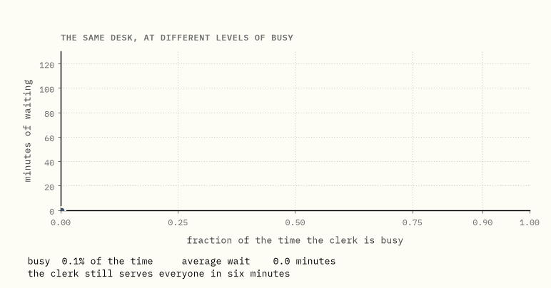
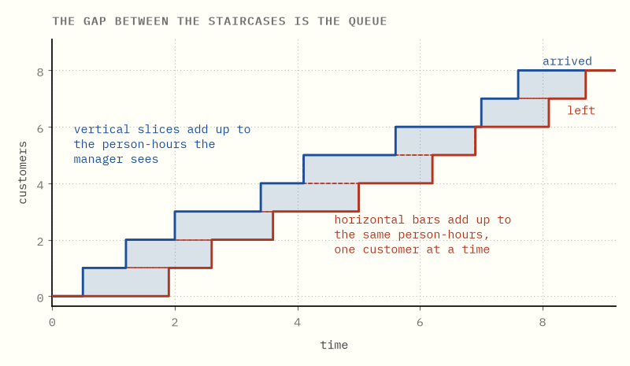
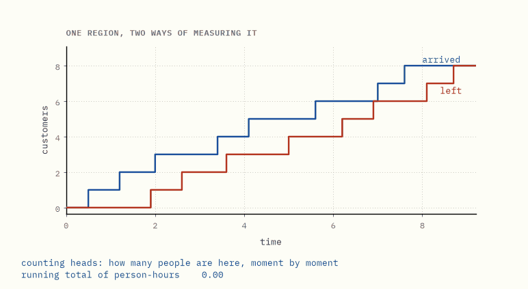
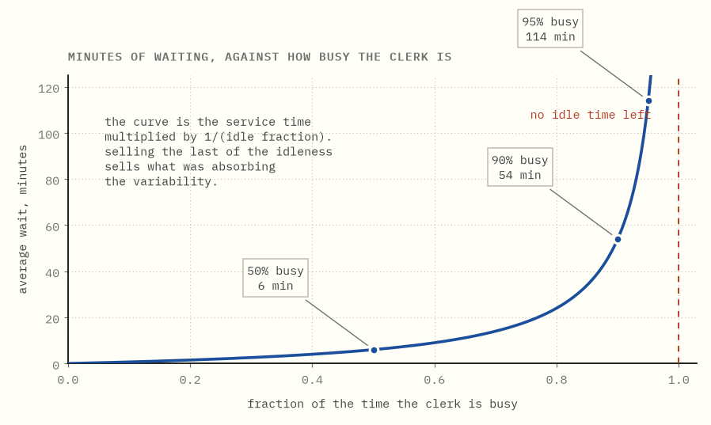
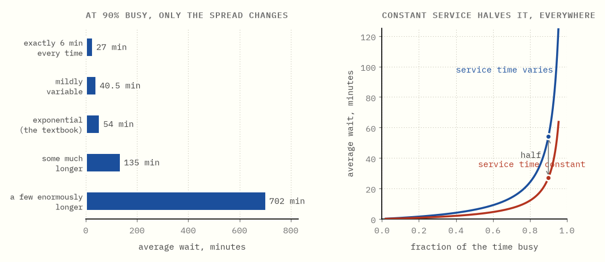
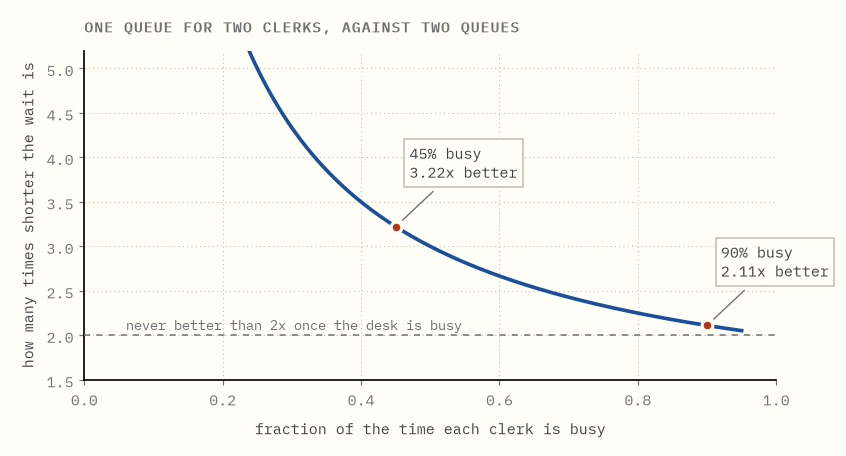
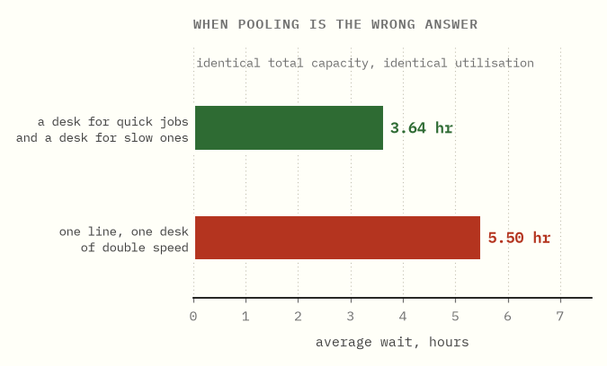
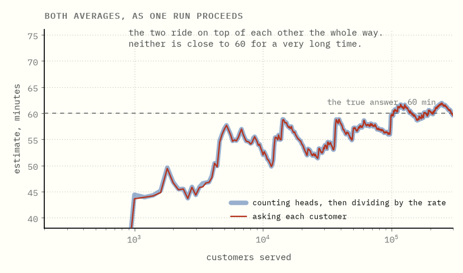
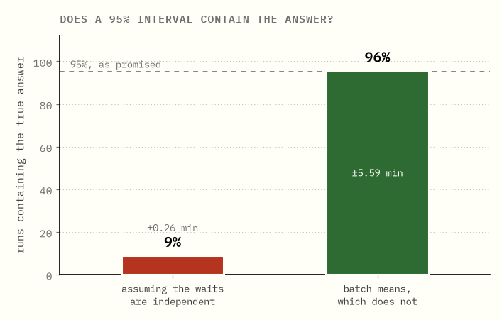

The wait is not about the speed
Queues and Little's law, built from one clerk and a six-minute job.
A clerk who serves a customer in six minutes will, at some point, hand someone a wait of an hour. Nothing about the clerk changed. Nothing about the job changed. This guide is about what did.
Two ideas carry the whole thing. One is an accounting identity so plain it looks like it cannot be worth stating, and so general it applies to warehouses, hospitals and software teams that contain no queue at all. The other is that what generates waiting is not how busy you are. It is how irregular you are, and those are separate dials. Same clerk, same six minutes on average, same 90% busy: make every job take exactly six minutes and the wait is 27 minutes; let a few of them run long and it is 702.
The plan. Chapter 2 proves the identity, with a picture and no probability. Chapter 3 lists what it does not need, which is nearly everything. Chapters 4 to 8 are where the waiting actually comes from, and they end by taking it apart into three things you can move separately. Chapters 9 and 10 are what to do about it. Chapters 11 and 12 are why measuring your own queue is harder than it looks.
The numbers below come from the code in this folder, in exact rationals, asserted by its tests.
0What this is

One clerk. Six minutes a customer, always. The only thing changing is how often people arrive.
At half busy, the wait is six minutes. At 90% busy, it is 54 minutes. At 99% busy, it is very nearly ten hours.
The clerk has not slowed down at any point. What ran out was idleness, and idleness turns out to be the thing that was absorbing all the irregularity.
In one sentence. The wait is not set by how fast the clerk works; it is set by how little slack is left.
1The desk
One clerk, serving on average ten customers an hour, so six minutes a customer. People arrive at random.
Three quantities, and it matters which is which:
| what it means | who would notice | |
|---|---|---|
| L | how many people are here, on average | someone glancing at the room |
| W | how long a person is here, on average | the person |
| λ | how many people arrive per hour | the door |
Two of those have ordinary names. The third is written λ, the Greek letter lambda, and it is the only Greek letter in this guide. It is not hiding anything: λ is the arrival rate, the number of people coming through the door per hour. Read it as "arrivals per hour" every time it appears.
These are averages of different things, and that is the point.
L averages over time. Take a photograph at random moments and count heads.
W averages over people. Ask each one how long they were there.
Nobody computing L ever asks anyone a question, and nobody computing W ever
looks at a clock on the wall. They are not two views of one measurement; they
are two measurements.
One more quantity, because it turns out to be the same idea: utilisation, the fraction of the time the clerk is busy. At ten customers an hour arriving and six minutes each, the clerk is busy 90% of the time.
In one sentence.
Lis counted off the clock andWoff the customers, and nothing so far connects them.
2Draw a box
Here is the whole theorem, and it contains no probability.
Draw two staircases. One steps up whenever somebody arrives. The other steps up whenever somebody leaves. The gap between them, at any moment, is the number of people in the room.

Now measure the shaded region between them, twice.
Slice it vertically. Each thin strip is how many people were here during a moment, so adding the strips up gives person-hours as the manager would count them: heads, repeatedly, over time.
Slice it horizontally. Each bar is one customer, running from their arrival to their departure, so its length is how long that person stayed. Adding the bars up gives person-hours as the customers would count them: one number each, no clock.

Same region. Both totals are 11.60 person-hours for the eight customers drawn. They are not close. They are the same number, because it is the same shape measured two ways.
Divide that shared area by the elapsed time and you get the average number present. Divide it by the number of customers and you get the average time each one spent. So the two averages differ by exactly the factor of customers per unit time, which is the arrival rate:
L = λW
That is Little's law. It is an identity about a shaded region, and the argument above is the entire proof.
It also applies to any box you care to draw. Draw the box around the waiting line only, excluding the clerk, and it says the number of people queueing equals the arrival rate times the time spent queueing. Draw the box around the clerk alone, a box holding zero people or one, and its average occupancy is the fraction of time the clerk is busy. So:
utilisation = arrival rate × service time
Utilisation is not a separate concept. It is Little's law applied to the smallest interesting box in the building.
In one sentence. One region measured two ways gives
L = λW, and the proof is the picture.
3What the law does not need
The proof used a picture of eight customers. It did not use a distribution, so the list of things Little's law does not require is unusually long, and worth having explicitly:
- No distributional assumptions. Not Poisson arrivals, not exponential service, not anything. The staircases were drawn by hand.
- No independence. Arrivals may be correlated with each other and with how long service takes.
- No queue discipline. First come first served, last come first served, priority, random: the horizontal bars can be reordered freely and the region is unchanged. (The figure above serves in order only so that the bars tile the region visibly; the identity does not care.)
- No steady state. No stationarity, no equilibrium, no Markov property. Only the long-run averages need to settle.
- No single server, and no server at all. The box may contain a hundred clerks, or a warehouse, or an entire hospital.
What it does need is small and mostly about bookkeeping.
λ has to count entries to the box you drew. If people give up and leave the line, they are not arrivals to the part of the system you are measuring.
W has to be measured across the same boundary as L. Mixing "time spent
queueing" with "number of people in the building" is the most common way to get
a wrong answer out of a correct theorem.
And everyone who enters has to eventually leave.
In one sentence. Little's law needs no probability at all, only that you draw one box and measure both quantities across the same edge.
4Where the multiplier comes from
Little's law relates the averages. It does not say how big they are. For that you have to know something about the randomness, and here the guide stops proving things and starts quoting one:
time in the building = service time × 1/(fraction of time idle)
That line deserves a warning label. Chapter 2 needed no assumptions at all; this one needs three, and they are the ones chapter 3 spent a page celebrating the absence of: customers arrive at random with no rhythm to them, service times are random in the particular way where knowing a job has already run five minutes tells you nothing about how much longer it has to go, and there is exactly one clerk. Queueing theory calls that combination M/M/1. Getting from those assumptions to that line takes probability this guide does not assume, so the line is quoted rather than earned.
What can be shown without any probability is why the idle fraction ends up underneath.
Stop watching the queue and watch the backlog. The clerk is 90% busy, which is another way of saying work walks in at nine tenths of the speed the clerk can clear it. Serve one customer: six minutes. During those six minutes, more work arrived: nine tenths of six minutes of it, which is 5.4 minutes. Serve that, and during those 5.4 minutes another 4.86 minutes walks in. Serve that. Each round of serving drags in a smaller round of arrivals, and the clerk does not get to sit down until the whole chain runs out:
6 + 5.4 + 4.86 + ... = 6 / (1 − 0.9) = 60 minutes
That is a geometric series. Every term is nine tenths of the one before it, and a series like that totals the first term divided by whatever is left when you subtract the ratio from one. The leftover here is the idle fraction. At 90% busy the chain runs to ten times the original six minutes; at 99% busy, to a hundred times. Nothing in that calculation is about the clerk's speed. The speed is the 6 at the front. The idle fraction is the multiplier, and it is doing all the damage.
Strictly, the number that series computes is the length of one unbroken busy stretch, not one customer's wait. But the 1/(idle fraction) sits in both, and it is there for the same reason, and for one clerk with random arrivals the two happen to land on the same sixty minutes.
In one sentence. Each round of serving drags in a smaller round of arrivals, and the chain of rounds runs to the service time divided by the idle fraction.
5The wait explodes long before the clerk is full
Now put numbers through it, because the shape of the answer is not what anybody expects.

Sixty minutes is the whole visit, service included. The table below reports the wait before service starts, so it is the same formula with the six minutes of actual service taken back off: 60 − 6 = 54. Every row is that subtraction.
| arrivals per hour | busy | people present | wait before service |
|---|---|---|---|
| 5 | 50% | 1 | 6 min |
| 8 | 80% | 4 | 24 min |
| 9 | 90% | 9 | 54 min |
| 9.5 | 95% | 19 | 114 min |
| 9.9 | 99% | 99 | 594 min |
Read the arithmetic between the rows, because it is the whole point:
- 5 to 9 customers an hour. You added 80% more work. The wait went up nine times.
- 9 to 9.5. You added 5.6% more work. The wait doubled.
- 9.5 to 9.9. You added 4.2% more work. The wait went up five times.
The multiplier is one over the idle fraction, so what is being consumed as you approach saturation is not capacity but slack. At 99% busy, the last one percent of the clerk's time is carrying all of the queue.
The middle column is chapter 2 again, quietly checking the work. Nine arrivals
an hour, an hour in the building each, so L = λW says nine people should be
standing there on average. They are.
This is also why a dashboard that reports utilisation and calls 97% green is reporting the one number that cannot go bad. Utilisation is bounded above by one, so it can never look alarming. The wait is bounded by nothing, and by the time utilisation looks impressive the wait has already left the building.
In one sentence. What runs out as you approach saturation is not capacity but slack, so a few percent more work near the top multiplies the wait.
6It is not the utilisation, it is the variability
So far everything has said the wait comes from how busy the clerk is. That is half of it, and the smaller half.
Take the desk at 90% busy, where people wait 54 minutes. Change nothing about the speed: the clerk still averages six minutes a customer, still serves ten an hour, still busy exactly 90% of the time. Only make the six minutes reliable so that every customer takes exactly six minutes, no more and no less.
The wait falls to 27 minutes. Exactly half.

Half at every utilisation, exactly, and not approximately. The ladder continues in the other direction too:
| service times are | wait at 90% busy |
|---|---|
| always exactly 6 minutes | 27 min |
| mildly variable | 40.5 min |
| exponential (the textbook case) | 54 min |
| some customers much longer | 135 min |
| a few enormously longer | 702 min |
Same clerk. Same average service time. Same 90% utilisation. A twenty-six fold spread in how long people wait.
Nothing in chapter 4 predicts that. The formula there had a service time and an idle fraction in it, and both are being held fixed across every row of that table. Something else is setting the wait, and the next two chapters are about what.
In one sentence. Two desks can be identical in speed and identical in how busy they are, and still differ twenty-six fold in how long you queue.
7Why you keep arriving during the long job
The reason is not obvious, and the smallest possible example makes it obvious.
Give this clerk two kinds of job and nothing else. Nine customers out of every ten need two minutes. The tenth needs forty-two. Nothing about the desk has changed: (9 × 2 + 42) / 10 = 60 / 10 = 6, so the average job is still six minutes and the clerk is still 90% busy.
Now walk in at a random moment and find the clerk mid-job. Which job is it?
Here is the check worth doing in your head, because it is where the whole chapter lives. Those ten customers occupy the clerk for 9 × 2 = 18 minutes of short work and 42 minutes of long work, 60 minutes in total. Forty-two of those sixty minutes are inside the long job. So seven times out of ten you have walked in on the forty-two-minute customer, even though only one customer in ten is one.
That is the inspection paradox, and it has nothing to do with queues. Sample a timeline by picking a moment rather than by picking an item, and long items get picked in proportion to how long they are. The clock is not counting customers. It is counting minutes, and the long customer brought more of them.
So average the job you land in the way the clock weights it, not the way the customer list does:
(18/60) × 2 + (42/60) × 42 = 0.6 + 29.4 = 30 minutes
Thirty. Five times the six-minute average job. You arrive somewhere in the middle of it, so what is left to run when you sit down is about fifteen minutes, against the three minutes you would have guessed by halving the average job and stopping there.
That leftover is the quantity the next chapter needs. Run the same weighting on the exponential clerk and it comes to six minutes. On the perfectly regular clerk, where every job is six minutes and there is nothing for the clock to be biased toward, it is three.
Three, six, fifteen.
In one sentence. You do not meet the average job; you meet the job that was occupying the most minutes, which is why irregular work costs so much.
8Three dials
Three, six and fifteen minutes of leftover. Now look back at the ladder in chapter 6: 27, 54 and 135 minutes of wait.
Every wait in it is exactly nine times the leftover.
The nine is the busy fraction over the idle fraction, 0.9 / 0.1, which is the only place utilisation gets in at all. Three, six and fifteen minutes of leftover give 27, 54 and 135, and the two-minutes-and-one-forty-two clerk from chapter 7 is the fourth row exactly: 9 × 15 = 135. The two rows skipped above work the same way.
So the wait was never one quantity. It is three, multiplied:
wait = (utilisation dial) × (variability dial) × (how long the job takes)
The last two multiplied together are the leftover of chapter 7, and the first is the 0.9 / 0.1. Nothing else is in there.
Which makes it a genuine design choice, and the dials do not cost the same to turn. Buying capacity moves the first one, and near saturation it moves it brutally slowly, because 0.9 / 0.1 is a ratio that fights back. Making the work more uniform moves the second one, in direct proportion, at any utilisation at all. Cutting variability in half does the same thing as a large capacity increase, and is frequently cheaper.
"Reduce variation" sounds like a slogan. It is arithmetic.
(The exact version of this is the Pollaczek–Khinchine formula, and the general approximation is Kingman's. You can forget both names; the three dials are the content.)
Try it yourself → Move utilisation and variability independently and watch which one costs more.
In one sentence. The wait is a product of three separate things, and the one everybody manages is the one that is hardest to move.
9Two clerks, one line
Two clerks, the same total work. Either two separate lines, one per clerk, or a single line feeding whichever clerk frees up first. Identical staff, identical capacity, identical utilisation.

At 90% busy: 54 minutes in separate lines, 25.6 minutes in one line. Twice as good, for free.
At 45% busy: 4.9 minutes against 1.5 minutes. Over three times better.
Note which way round that goes, because most people guess the opposite. Pooling helps most when you are quiet, and its advantage shrinks toward a factor of two as you get busy.
The mechanism is not extra capacity; there isn't any. It is the elimination of one specific situation: a clerk sitting idle while somebody waits in the other line. That situation is pure waste, it is the only thing separate lines can do that a shared line cannot, and pooling removes all of it.
Which is also why the gain shrinks as you get busier. At 90% busy an idle clerk is a rare event to begin with, so there is very little of it left to eliminate. Pooling is worth most exactly when you feel you need it least.
Try it yourself → Add clerks and watch the single line pull ahead, then make them busier and watch the gap close again.
In one sentence. One line for many clerks wins by deleting idle servers rather than by adding capacity, so it helps most when you are quiet.
10When pooling is the wrong answer
Chapter 9 makes pooling sound unconditional. It is not, and chapter 8 already handed you the reason it can fail.
Suppose the work is not all alike. Quick jobs take an hour and arrive often; slow jobs take ten hours and arrive rarely. Give each type its own desk, and each desk runs at 80% busy. Or pool them into one line served by a desk of double speed, at identical total capacity and identical utilisation.

| average wait | |
|---|---|
| a desk for quick jobs, a desk for slow ones | 3.64 hours |
| one line, one desk of double speed | 5.50 hours |
Pooling is 1.5 times worse. Nothing was taken away; the arrangement alone did it.
Read it through the three dials. Putting everything in one line means a one-hour job can arrive behind a ten-hour job and wait for it, so the thing people queue behind has become wildly more irregular. That is the second dial of chapter 8, turned the wrong way, and chapter 7 is why it hurts: arrive at a random moment and you are far more likely to land inside a ten-hour job than a count of the jobs would suggest.
So pooling does two things at once. It raises the number of servers, which helps, and it raises the variability of the single queue everyone now stands in, which hurts. Usually the first wins. When the jobs are wildly different sizes, the second does, which is why hospitals have a separate minor injuries stream and supermarkets have a basket-only till.
In one sentence. Pooling trades more servers against a more irregular queue, and when job sizes differ wildly that trade goes the wrong way.
11Measuring it is harder than computing it
If you did not believe any of the above, the obvious move is to measure your own queue. This chapter is about why that is much harder than it looks.
Run a simulated desk at 90% busy and track both averages as they accumulate: counting heads over time and dividing by the arrival rate, against asking each customer and averaging.

Two things are in that picture, and they point in opposite directions.
Little's law is satisfied from almost the first customer. The two curves sit on top of each other the whole way. That is the identity of chapter 2 doing its work: over a window that starts and ends with an empty room, the agreement is exact to fourteen decimal places, with no assumptions and no limit taken.
And both of them are wrong for a very long time. After three hundred thousand customers the estimate is still wandering around in the fifties for a true answer of sixty.
Put those together and you get the trap. Your simulation satisfying L = λW
tells you nothing whatsoever about whether it has converged, because it was
never going to fail that check. The identity holds on any sample path at all,
converged or not — that is precisely what chapter 3 was celebrating. A test that
cannot fail is not evidence.
So the reassuring thing your run reports is the one thing that carries no information about the number you care about.
In one sentence. Little's law is satisfied long before your estimate is right, so watching it agree tells you nothing about whether you can stop.
12The confidence interval is twenty times too narrow
Now the part that should worry anyone who has ever reported a simulation result.
Take the ordinary 95% confidence interval, the one every statistics course teaches, the standard deviation over the square root of the sample size, and apply it to two hundred thousand measured waits. Repeat the whole experiment three hundred times, and count how often the interval actually contains the true answer.

It contains the true answer 9% of the time. It is about twenty times too narrow.
The reason is that consecutive waits in a queue are not independent observations, and it is not close. One long wait makes the next one long.
You can measure how long that memory lasts, and the code in this folder does. Simulate six hundred thousand waits in a row. Take each wait and the one after it and see how strongly the two move together; do the same at a gap of two customers, and three, and ten, and keep adding those up until the agreement dies away and the queue has forgotten. The total is how many customers it takes before you have genuinely learned something new.
At 90% busy, roughly four hundred consecutive customers behave as a single observation. So two hundred thousand measurements are worth about five hundred.
Roughly is the honest word: run the measurement again on different random numbers and the answer moves by a hundred either way. But the size is not in doubt, and note what it was measured from. That number came out of the waits themselves, with no reference to any confidence interval. The coverage came out of running the experiment three hundred times and counting. So the square root of four hundred being twenty, the same factor by which the interval is too narrow, is two separate measurements landing in the same place rather than one of them restated.
Cutting the run into ten large blocks and treating the block averages as the observations restores it: 96% coverage, with an honest interval more than twenty times wider than the confident, wrong one.
The moral is not that simulation is useless. It is that near saturation, the formula is not the approximation. The measurement is.
In one sentence. Little's law being satisfied is not evidence that your measurement has converged, and the ordinary confidence interval is twenty times too narrow.
13The same law somewhere else entirely
Little's law says nothing about queues. It says something about boxes with things going in and out. Rename the three letters:
| L | λ | W | |
|---|---|---|---|
| a queue | customers present | arrivals per hour | time in the system |
| inventory | stock on hand | throughput | days of supply |
| a factory | work in progress | production rate | cycle time |
| a kanban board | items in progress | delivery rate | lead time |
| a hospital ward | occupied beds | admissions per day | length of stay |
| a company | employees | hires per year | average tenure |
Each row is the same theorem. Two are worth spelling out.
A WIP limit is a lead-time limit. A team finishing 12 items a week with 6 in progress has a lead time of 6/12 = half a week. Raise the limit to 18 "so nobody is blocked" and throughput does not move, being set by the bottleneck rather than by how much you shove in, so the lead time becomes 18/12, a week and a half. It tripled, and nothing else about the team changed. This is the entire theoretical content of a kanban limit, and of CONWIP, the older constant-work-in-progress rule it descends from.
Safety stock is measured in time, whether you like it or not. A distributor
moving $100,000 of goods a day and holding $9M of inventory has, by Little's
law, 90 days of supply. Add $3M of stock to improve service and you have not
bought service; you have bought 30 more days of age on every unit. Obsolescence
and markdown scale with W, and you just increased it by a third.
Neither of those needed a demand distribution, a lead-time model, or an independence assumption. That is why this particular result survives contact with reality when most inventory theory does not.
In one sentence. Anything with a boundary, an inflow and an outflow obeys the same identity, which is why a WIP limit and a days-of-supply figure are the same statement twice.
What the plain words are really called
| this guide says | everyone else says |
|---|---|
| how many are here, on average | L, the time-average number in system |
| how long a person is here | W, the customer-average sojourn time |
| L = λW | Little's law |
| fraction of time the clerk is busy | utilisation, ρ |
| one over the idle fraction | the congestion multiplier, 1/(1−ρ) |
| random arrivals, random service, one clerk | M/M/1 |
| every job takes exactly the same time | M/D/1 |
| the variability dial | the squared coefficient of variation, c² |
| the wait formula for any service distribution | the Pollaczek–Khinchine formula |
| the three-dial version | Kingman's approximation |
| one line, several clerks | M/M/c; the wait probability is Erlang C |
| cutting a run into blocks to get an honest interval | the batch means method |
Further reading
Ross's Introduction to Probability Models for the derivations, Harchol-Balter's Performance Modeling and Design of Computer Systems for the many-server and job-size-variability material, and Little's own 50th-anniversary retrospective for how far the identity reaches. The sample-path proof in chapter 2 follows Stidham's 1974 version, which is the one that needs no probability.
Running the code
make bootstrap # once, from the repository root
cd queues && make verify
The formulas are exact rationals, so "exactly half" in chapter 6 means exactly half. The simulation shares no code with the formulas, which is what lets the tests use each to check the other.